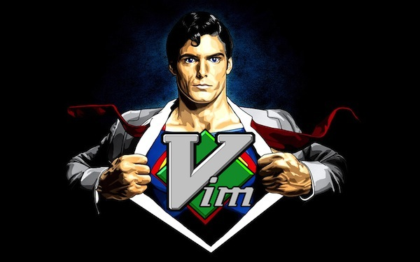
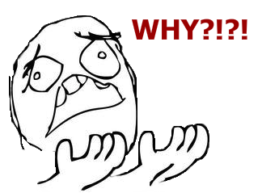
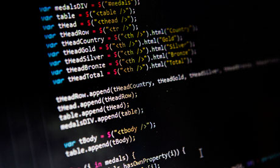

Vim. Intro
Created by Sloboda Studio / Github SlobodaStudio / Twitter @Slobodastudio
Почему vim?
И у меня на это 5 7 причин:
- Cross-platform
- Скорость загрузки
- Скорость работы (Пруфлинк)
- Open source
- Правки на сервере? Легко!
- Настраиваемость
- Да выкинь же ты эту мышку наконец!
Режимы | Modes
БибикатьВсё ломать
- Normal
- Insert
- Visual
- Replace
Нормальный режим
Normal mode
Как перейти?
По умолчанию в нем
И тут самое интересное...
Нормальный режим | Normal mode

Insert mode
Как перейти?
i, I, a, A, o, O, gi
Коммандный режим
Command mode
Как перейти?
просто ':'
А еще есть...
:!
Визуальный режим
Visual mode
Как перейти?
v, V, C-v
По сути - 3 разный визуальных режима
Хватит болтать!
Useful links